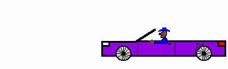

/* D e F a C e D */
(by: ???)
Yes, this page was defaced, no it wasn't "hacked". Simply because defacing a website does not fall under the catogory "hacking". And of course, to answer you second question, yes, this was lame.
Anyhow, props, shouts, greets, etc go out to (I know this list is longer then Bill Clinton's erection, sorry) - moneo, Troll Man, The Fuzzy Ninja, digital, Apocalypse-X, KiS-MAS, Nostalgia, faxrazor, Kartoon God, neodeath, KuNg, Bananakin, Inverse Sanity, Shadow51, Tupac, R00T-dude, Dawg Fish, Acid Warp, Evil Zemo, Bronc Buster, WHiTe VaMPiRe, JesteR, Psiber Joe, Net Ripper, Sh4d0w, phorce, and all the k-rad AOL users, because I really like AOL. WHY ARE YOU GIVING ME THAT LOOK?!
Fuck you's goto - You, for laughing at me. :(
Sites to check out because
I said so.
http://www.attrition.org
http://www.hackdesk.com
http://mediahype.cjb.net
http://socialmachine.cjb.net
Now, goto IRC.DUCKWEB.NET join #HackDesk, and chat with all my buddies!